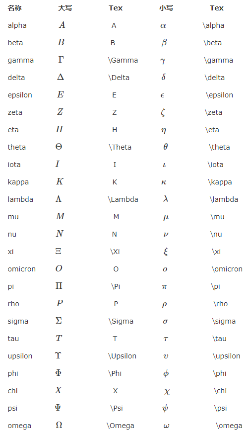

MathJax与Latex公式简介
本文从math.stackexchange.com上名为MathJax basic tutorial and quick reference的问题翻译而来，并有所改动。主要讲述了如何使用MathJax和相关的Latex语法。
MathJax简介
MathJax是一款运行在浏览器中的开源数学符号渲染引擎，使用MathJax可以方便的在浏览器中显示数学公式，不需要使用图片。目前，MathJax可以解析Latex、MathML和ASCIIMathML的标记语言。MathJax项目于2009年开始，发起人有American Mathematical Society, Design Science等，还有众多的支持者，个人感觉MathJax会成为今后数学符号渲染引擎中的主流，也许现在已经是了。本文接下来会讲述MathJax的基础用法，但不涉及MathJax的安装及配置。此外，推荐使用StackEdit学习MathJax的语法，它支持Markdown和MathJax；
基础
公式标记与查看公式
使用MathJax时，需要用一些适当的标记告诉MathJax某段文本是公式代码。此外，MathJax中的公式排版有两种方式，inline和displayed。inline表示公式嵌入到文本段中，displayed表示公式独自成为一个段落。例如，$f(x)=3×x$ 这是一个inline公式，而下面
$$
f(x) = 3 \times x
$$
则是一个displayed公式。
在MathJax中，默认的displayed公式分隔符有 $$...$$ 和 \[...\] ，而默认的inline公式分隔符为(...)，当然这些都是可以自定义的，具体配置请参考文档。下文中，使用$$...$$作为 displayed 分隔符，$...$作为 inline 分隔符。
此外，可以在渲染完成的公式上方右键点击，唤出右键菜单。在菜单中提供了查看公式代码、设置显示效果和渲染模式的选项。
希腊字母
请参见下表：
上标与下标
上标和下标分别使用^与_，例如x_i^2: $x^2$。默认情况下，上下标符号仅对下一个组起作用。一个组即单个字符或者使用{...}包裹起来的内容。也就是说，如果使用10^10，会得到 $10^10$，而10^{10}才是 $10^10$。同时，大括号还能消除二义性，如 x^5^6 将得到一个错误，必须使用大括号来界定^的结合性，如{x^5}^6：${x^5}^6$ 或者 x^{5^6}：$x^{5^6}$
括号
- 小括号与方括号：使用原始的
()，[]即可，如(2+3)[4+4]: $(2+3)[4+4]$ - 大括号：由于大括号
{}被用来分组，因此需要使用\{和\}表示大括号，也可以使用\lbrace和\rbrace来表示。如 $ \lbrace a*b \rbrace $ - 尖括号：使用
\langle和\rangle表示左尖括号和右尖括号。如\langle x \rangle: $\langle x \rangle$ - 上取整：使用
\lceil和\rceil表示。如\lceil x \rceil：$\lceil x \rceil$ - 下取整：使用
\lfloor和\rfloor表示。如\lfloor x \rfloor：$\lfloor x \rfloor$ - 不可见括号：使用
.表示
需要注意的是，原始符号并不会随着公式大小缩放，可以使用 \left(...\right) 来自适应地调整括号大小。如
$$
\lbrace\sum_{i=0}^0 i^2 = \frac{(n^2+n)(2n+2)}{6}\rbrace\tag{1.1}
$$
$$
\left\lbrace\sum_{i=0}^0 i^2 = \frac{(n^2+n)(2n+2)}{6}\right\rbrace\tag{1.2}
$$
可以看到，公式1.2中的括号是经过缩放的。
求和与积分
\sum 用来表示求和符号，其下标表示求和下限，上标表示上限。如\sum_1^n： $\sum_1^n$。
\int 用来表示积分符号，同样地，其上下标表示积分的上下限。如\int_1^\infty：$\int_1^\infty$
与此类似的符号还有：\prod：$\prod$ , \bigcup：$\bigcup$ , \bigcap：$\bigcap$ , \iint：$\iint$。
分式和根式
分式的表示：
- 第一种，使用
\frac{a}{b},\frac作用于其后的两个组a , b ，结果为 $\frac{a}{b}$。如果你的分子或分母不是单个字符，请使用{...}来分组。 - 第二种，使用
\over来分隔一个组的前后两部分，如{a+1 \over b+1}：${a+1 \over b+1}$
根式使用 \sqrt 表示，如：\sqrt[4]{\frac xy}：$\sqrt[4]{\frac xy}$
字体
- 使用
\mathbb或\Bbb显示黑板粗体字，此字体经常用来表示实数、整数、有理数、复数。如
$$
\mathbb{CHNQRZ}
$$
- 使用
\mathbf显示黑体字，如
$$
\mathbf{ABCDEFGHIJKLMNOPQRSTUVWXYZ}
$$
$$
\mathbf{abcdefghijklmnopqrstuvwxyz}
$$
- 使用
\mathtt显示打印机字体，如
$$
\mathtt{ABCDEFGHIJKLMNOPQRSTUVWXYZ}
$$
$$
\mathtt{abcdefghijklmnopqrstuvwxyz}
$$
- 使用
\mathrm显示罗马字体，如
$$
\mathrm{ABCDEFGHIJKLMNOPQRSTUVWXYZ}
$$
$$
\mathrm{abcdefghijklmnopqrstuvwxyz}
$$
- 使用
\mathscr显示手写体，如
$$
\mathscr{ABCDEFGHIJKLMNOPQRSTUVWXYZ}
$$
- 使用
\mathfrak显示Fraktur字母（一种德国字体），如
$$
\mathfrak{ABCDEFGHIJKLMNOPQRSTUVWXYZ}
$$
$$
\mathfrak{abcdefghijklmnopqrstuvwxyz}
$$
特殊函数和符号
- 常见的三角函数，如 $\sin x$，$\arctan_x$，$\lim_{1\to\infty}$
- 比较运算符：
\lt \gt \le \ge \neq: $\lt \gt \le \ge \neq$。可以在这些运算符前面加上 \not，如\not\lt: $\not\lt$ \times \div \pm \mp表示：$\times \div \pm \mp$，\cdot表示居中的点，x \cdot y：$x \cdot y$- 集合关系与运算：
\cup \cap \setminus \subset \subseteq \subsetneq \supset \in \notin \emptyset \varnothing: $\cup \cap \setminus \subset \subseteq \subsetneq \supset \in \notin \emptyset \varnothing$ - 表示排列使用
\binom{n+1}{2k}：$\binom{n+1}{2k}$ 或{n+1 \choose 2k}：${n+1 \choose 2k}$ - 箭头：
\to \rightarrow \leftarrow \Rightarrow \Leftarrow \mapsto：$\to \rightarrow \leftarrow \Rightarrow \Leftarrow \mapsto$ - 逻辑运算符：
\land \lor \lnot \forall \exists \top \bot \vdash \vDash：$\land \space \lor \space \lnot \space \forall \space \exists \space \top \space \bot \space \vdash \space \vDash$ \star \ast \oplus \circ \bullet：$\star \ast \oplus \circ \bullet$\approx \sim \cong \equiv \prec：$\approx \sim \cong \equiv \prec$\infty \aleph_o \nabla \partial \Im \Re：$\infty \aleph_o \nabla \partial \Im \Re$- 模运算
\pmode, 如a \equiv b \pmod n：$a \equiv b \pmod n$ \ldots：$\ldots$ 与\cdots：$\cdots$，其区别是dots的位置不同，ldots位置稍低，cdots位置居中。- 一些希腊字母具有变体形式，如
\epsilon \varepsilon: $\epsilon \space \varepsilon$ ，\phi \varphi: $\phi \space \varphi$
使用Detexify，你可以在网页上画出符号，Detexify会给出相似的符号及其代码。这是一个方便的功能，但是不能保证它给出的符号可以在MathJax中使用，你可以参考supported-latex-commands确定MathJax是否支持此符号。
空间
通常MathJax通过内部策略自己管理公式内部的空间，因此a...b 与 a......b ( . 表示空格) 都会显示为 $ab$。可以通过在ab间加入\,增加些许间隙，\;增加较宽间隙，\quad与 \qquad会增加更大的间隙，如 $a \quad b$
顶部符号
对于单字符，\hat：$\hat x$
对于多字符，\widehat：$\widehat {xy}$
类似的还有 \overline , \vec , \overrightarrow , \dot , \ddot : $\overline {xyz}$，$\vec a$，$\overrightarrow x$，$\dot x$，$\ddot x$
结束语
基础部分就是这些。需要注意的是一些MathJax使用的特殊字符，可以使用\转义为原来的含义，如\$表示 $ , \_表示下划线。
表格
使用 $\begin{array}{列样式}...\end{array}$ 这样的形式来创建表格，列样式可以是 clr 表示居中，左，右对齐，还可以使用|表示一条竖线。表格中各行使用 \ 分隔，各列使用 & 分隔，使用 \hline 在本行前加入一条直线。例如 $\begin{array}{c|lcr} n & \text{Left} & \text{Center} & \text{Right} \\ \hline 1 & 0.24 & 1 & 125 \\ 2 & -1 & 189 & -8 \\ 3 & -20 & 2000 & 1+10i \\ \end{array}$ 结果：
$$
\begin{array}{c|lcr}
n & \text{Left} & \text{Center} & \text{Right} \
\hline
1 & 0.24 & 1 & 125 \
2 & -1 & 189 & -8 \ 3 & -20 & 2000 & 1+10i
\end{array}
$$
一个复杂的例子如下：
$$
\begin{array}{c}\begin{array}{cc}\begin{array}{c|cccc} \text{min} & 0 & 1 & 2 &3 \ \hline 0 & 0 & 0 & 0 & 0 \ 1 & 0 & 1 & 1 & 1 \ 2 & 0 & 1 & 2 & 2 \ 3 & 0 & 1 & 2 & 3 \end{array} & \begin{array}{c|cccc} \text{max} & 0 & 1 & 2 & 3 \ \hline 0 & 0 & 1 & 2 & 3 \ 1 & 1 & 1 & 2 & 3 \ 2 & 2 & 2 & 2 & 3 \ 3 & 3 & 3 & 3 & 3 \end{array} \end{array} \ \begin{array}{c|cccc} \Delta & 0 & 1 & 2 & 3 \ \hline 0 & 0 & 1 & 2 & 3 \ 1 & 1 & 0 & 1 & 2 \ 2 & 2 & 1 & 0 & 1 \ 3 & 3 & 2 & 1 & 0 \end{array}\end{array}
$$
矩阵
基本用法
使用$$\begin{matrix}...\end{matrix}$$来表示矩阵，在 \begin 与 \end 之间加入矩阵的元素即可。矩阵的行之间用 \ 分隔，列之间用 & 分隔。
例如 $$\begin{matrix} 1 & x & x^2 \\ 1 & y & y^2 \\ 1 & z & z^2 \end{matrix}$$ 结果：
$$
\begin{matrix} 1 & x & x^2 \ 1 & y & y^2 \ 1 & z & z^2 \end{matrix}
$$
加括号
如果要对矩阵加括号，可以像上文中提到的那样，使用\left与\right配合表示括号符号。也可以使用特殊的matrix，即替换\begin{matrix}...\end{matrix}中的 matrix 为 pmatrix , bmatrix , Bmatrix , vmatrix , Vmatrix.
如 pmatrix：$\begin{pmatrix} 1 & 2 \ 3 & 4 \ \end{pmatrix}$，bmatrix：$\begin{bmatrix} 1 & 2 \ 3 & 4 \ \end{bmatrix}$，Bmatrix：$\begin{Bmatrix} 1 & 2 \ 3 & 4 \ \end{Bmatrix}$，vmatrix：$\begin{vmatrix} 1 & 2 \ 3 & 4 \ \end{vmatrix}$，Vmatrix：$\begin{Vmatrix} 1 & 2 \ 3 & 4 \ \end{Vmatrix}$
省略元素
可以使用\cdots ⋯⋯ \ddots ⋱⋱ \vdots ⋮⋮ 来省略矩阵中的元素，如：
$$
\begin{pmatrix} 1 & a_1 & a_1^2 & \cdots & a_1^n \ 1 & a_2 & a_2^2 & \cdots & a_2^n \ \vdots & \vdots & \vdots & \ddots & \vdots \ 1 & a_m & a_m^2 & \cdots & a_m^n \end{pmatrix}
$$
增广矩阵
增广矩阵需要使用前面的 array 来实现，如 $ \left[ \begin{array}{cc|c} 1 & 2 & 3 \\ 4 & 5 & 6 \end{array} \right]$ 结果：
$$
\left[ \begin{array}{cc|c} 1 & 2 & 3 \ 4 & 5 & 6 \end{array} \right]
$$
对齐的公式
有时候可能需要一系列的公式中等号对齐，如：
$$
\begin{align} \sqrt{37} & = \sqrt{\frac{73^2-1}{12^2}} \ & = \sqrt{\frac{73^2}{12^2} \cdot \frac{73^2-1}{73^2}} \ & = \frac{73}{12} \sqrt{1 - \frac{1}{73^2}} \ & \approx \frac{73}{12} \left( 1 - \frac{1}{2 \cdot 73^2} \right) \end{align}
$$
这时候需要使用形如\begin{align}...\end{align}的格式，其中需要使用&来指示需要对齐的位置，请使用右键查看上述公式的代码。
分类表达式
定义函数的时候经常需要分情况给出表达式，可使用\begin{cases}...\end{cases}。其中，使用\来分类，使用&指示需要对齐的位置。如：
$$
f(n) = \begin{cases} n/2, & \text{if $n$ is even} \ 3n+1, & \text{if $n$ is odd} \end{cases}
$$
上述公式也可以移动到右侧，不过需要使用array来实现，如下：
$$
\left. \begin{array}{l} \text{if $n$ is even:} & n/2 \ \text{if $n$ is odd:} & 3n+1 \end{array} \right} = f(n)
$$
最后，如果需要让分类之间的垂直间隔变大，可以使用 [2ex] 代替 \ 来分隔不同情况。（3ex, 4ex也可以使用，1ex相当于原始距离）。
空间问题
在使用LaTex公式时，有一些不会影响公式正确性，但会使其看上去很糟糕的问题。
不要在指数或者积分中使用\frac
在指数或者基本表达式中使用 \frac 会使表达式看起来不清晰，因此在专业的数学排版中很少被使用。应该使用一个水平的 / 来代替，效果如下：
$$
\begin{array}{cc} \mathrm{Bad} & \mathrm{Better} \ \hline \ e^{i\frac{\pi}{2}} \quad e^{\frac{i\pi}{2}} & e^{i\pi/2} \ \int_{-\frac{\pi}{2}}^{\frac{\pi}{2}} \sin x , dx & \int_{-\pi/2}^{\pi/2} \sin x , dx \ \end{array}
$$
使用\mid代替|作为分隔符
符号 | 作为分隔符时有排版空间大小的问题，应该使用 \mid 代替，效果如下：
$$
\begin{array}{cc} \mathrm{Bad} & \mathrm{Better} \ \hline \ {x | x^2 \in \Bbb Z} & {x \mid x^2 \in \Bbb Z } \end{array}
$$
多重积分
对于多重积分，不要使用 \int\int 此类的表达，应该使用 \iint \iiint 等特殊形式，效果如下：
$$
\begin{array}{cc} \mathrm{Bad} \mathrm{Better} \ \hline \ \int\int_S f(x) , dy , dx & \iint_S f(x) , dy , dx \ \int\int\int_V f(x) , dz , dy , dx & \iiint_V f(x) , dz , dy , dx \end{array}
$$
此外，在微分前应该使用 \ ,来增加些许空间，否则TEXTEX会将微分紧凑地排列在一起，如下：
$$
\begin{array}{cc} \mathrm{Bad} & \mathrm{Better} \ \hline \ \iiint_V f(x) dz dy dx & \iiint_V f(x) , dz , dy , dx \end{array}
$$
连分数
书写连分数表达式时，请使用 \cfrac 代替 \frac 或者 \over，两者效果对比如下：
$$
x = a_0+\cfrac{1^2}{a_1+\cfrac{2^2}{a_2+\cfrac{3^2}{a_3+\cfrac{4^2}{a_4+\cdots}}}} \tag{\cfrac}
$$
$$
x = a_0+\frac{1^2}{a_1+\frac{2^2}{a_2+\frac{3^2}{a_3+\frac{4^2}{a_4+\cdots}}}} \tag{\frac}
$$
方程组
使用\begin{array}...\end{array}与 \left{... 与 \right. 配合表示方程组，如：
$$
\left{ \begin{array}{c} a_1x+b_1y+c_1z=d_1 \ a_2x+b_2y+c_2z=d_2 \ a_3x+b_3y+c_3z=d3 \end{array} \right.
$$
同时，还可以使用\begin{cases}...\end{cases}表达同样的方程组，如：
$$
\begin{cases} a_1x+b_1y+c_1z=d_1 \ a_2x+b_2y+c_2z=d_2 \ a_3x+b_3y+c_3z=d_3 \end{cases}
$$
对齐方程组中的＝号，可以使用\begin{aligned}...\end{aligned}，如：
$$
\left{ \begin{aligned} a_1x+b_1y+c_1z & = d_1+e_1 \ a_2x+b_2y & = d_2 \ a_3x+b_3y+c_3z & = d_3 \end{aligned} \right.
$$
颜色
命名颜色是浏览器相关的，如果浏览器没有定义相关的颜色名称，则相关文本将被渲染为黑色。以下颜色是HTML4和CSS2标准中定义的一些颜色，其应该被大多数浏览器定义了。
$$
\begin{array}{|rc|} \hline \ \verb+\color{black}{text}+ & \color{black}{text} \ \verb+\color{gray}{text}+ & \color{gray}{text} \ \verb+\color{silver}{text}+ & \color{silver}{text} \ \verb+\color{white}{text}+ & \color{white}{text} \ \hline \ \verb+\color{maroon}{text}+ & \color{maroon}{text} \ \verb+\color{red}{text}+ & \color{red}{text} \ \verb+\color{yellow}{text}+ & \color{yellow}{text} \ \verb+\color{lime}{text}+ & \color{lime}{text} \ \verb+\color{olive}{text}+ & \color{olive}{text} \ \verb+\color{green}{text}+ & \color{green}{text} \ \verb+\color{teal}{text}+ & \color{teal}{text} \ \verb+\color{aqua}{text}+ & \color{aqua}{text} \ \verb+\color{blue}{text}+ & \color{blue}{text} \ \verb+\color{navy}{text}+ & \color{navy}{text} \ \verb+\color{purple}{text}+ & \color{purple}{text} \ \verb+\color{fuchsia}{text}+ & \color{fuchsia}{text} \ \verb+\color{magenta}{text}+ & \color{magenta}{text} \ \hline \end{array}
$$
此外，HTML5和CSS3也定义了一些颜色名称，参见链接。同时，颜色也可以使用 #rgb 的形式来表示，如下：
$$
\begin{array}{|rrrrrrrr|} \hline \verb+#000+ & \color{#000}{text} & & & \verb+#00F+ & \color{#00F}{text} & & \ & & \verb+#0F0+ & \color{#0F0}{text} & & & \verb+#0FF+ & \color{#0FF}{text} \ \verb+#F00+ & \color{#F00}{text} & & & \verb+#F0F+ & \color{#F0F}{text} & & \ & & \verb+#FF0+ & \color{#FF0}{text} & & & \verb+#FFF+ & \color{#FFF}{text} & & \ \hline \end{array}
$$
HTML色彩快速参考手册
公式标记与引用
使用\tag{yourtat}来标记公式，如果想在之后引用该公式，则还需要加上\label{yourlabel}在\tag之后
$$
a:= x^2-y^3 \tag{TEST} \label{TEST}
$$
为了引用公式，可以使用\eqref{rlabel}，如
$$
a+y^3 \stackrel{\eqref{TEST}}=x^2
$$
可以看到，通过超链接可以跳转到被引用公式的位置。
补充
空心的符号：\mathbb{KL}：$\mathbb{KL}$
向量、矩阵：\mathrm{x, y}：$\mathrm{x, y}$
使用 \begin{align} 时，在每个式子末尾加上 \nonumber 可以去掉显示式子的标号，具体内容参见【链接】